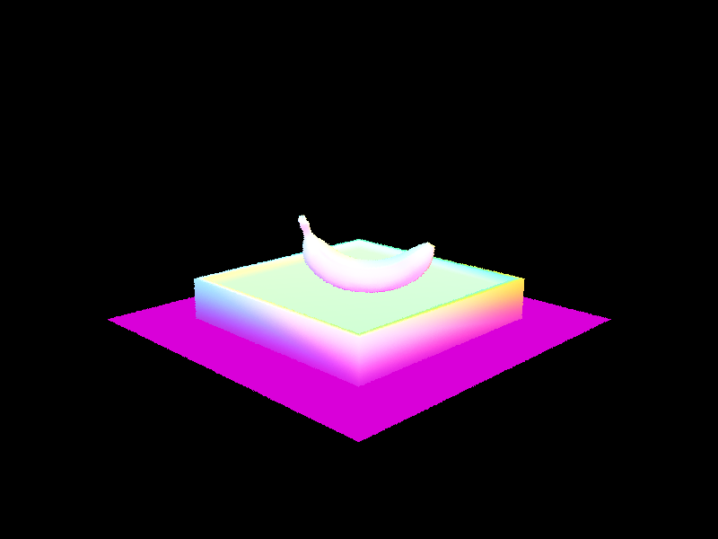
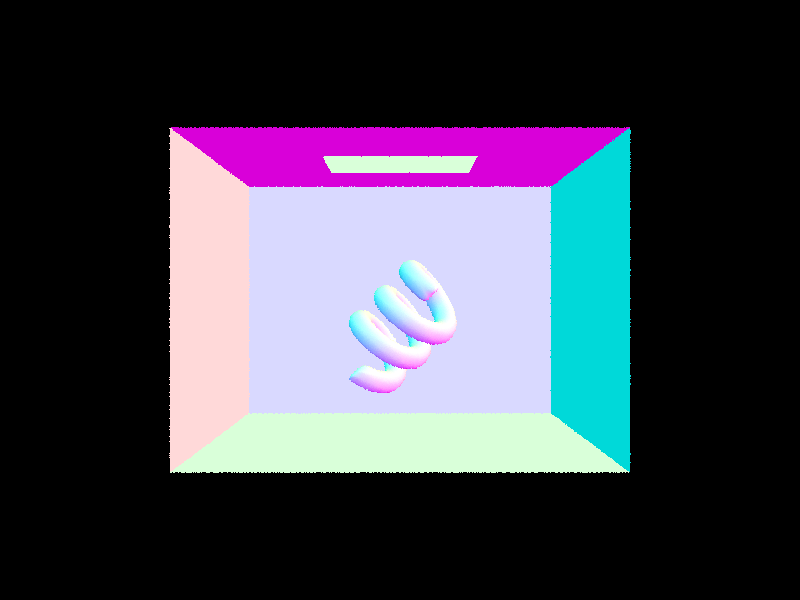
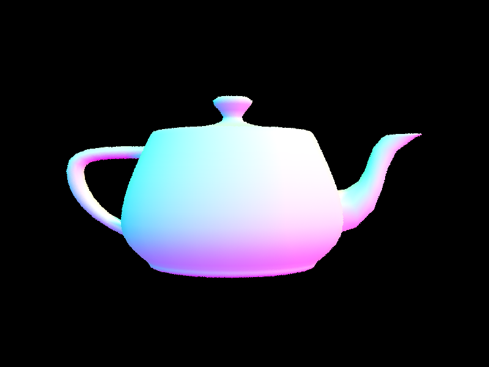

Walk through the ray generation and primitive intersection parts of the rendering pipeline.
The rendering pipeline begins by generating camera rays for each pixel. The input pixels are normalized to the [0,1] range and mapped onto a virtual sensor plane located at z = -1 in camera space. A ray is created from the camera origin through the corresponding point on the sensor plane and transformed into world space.
The pixel color is determined by sampling multiple rays within the pixel and obtaining its radiance using est_radiance_global_illumination(). The total radiance is accumulated and then averaged to produce the final pixel color.
The primitive intersection portion of the pipeline involves casting rays against scene primitives (basic geometric objects) and looking for the closest intersection point by updating the maximum distance of the ray whenever a closer hit is found. If a ray does not intersect with any primitive, the background color is returned. For intersections with a primitive, the surface normal is used for shading.
Explain the triangle intersection algorithm you implemented in your own words.
Triangle intersection was implemented using the Möller Trumbore algorithm introduced in lecture. First, two triangle edges are computed by subtracting the vertex position vectors. Next, the determinant is calculated, which measures how much the ray deviates from the plane of the triangle. A determinant of zero indicates that the ray is parallel to the plane of the triangle and that there is no intersection.
Next, the barycentric coordinates u and v are computed to determine if the intersection point lies inside the triangle. The hit is only valid if it satisfies u ≥ 0, v ≥ 0, and u + v ≤ 1. There is also a check to ensure that the intersection occurs within the valid range of the ray.
If all conditions are met, the ray.max_t field is updated so that only closer intersections are considered in future computations, ensuring that only the closest valid intersection remains relevant.
Normal shading for a few small .dae files.


